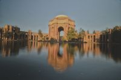
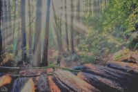
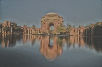
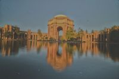
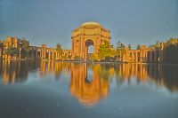
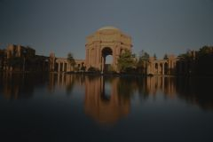
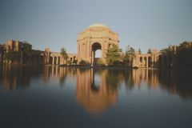
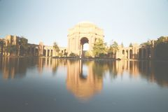

Single-image HDR
Shape the tonal range and texture of one original in Atelier's HDR tool, save it as a 16-bit TIFF stacked with the original, then finish its color in Develop.
Open a photo in HDR
- Select one photo and choose Photo › HDR… (⌃H), or right-click the photo › Edit in HDR. HDR opens in the same window; no view button is selected while it is open. Click Done at the foot of the right panel, or press Esc, to go back to the view you opened it from; or click Grid, Loupe or Develop (G, E, D). With unsaved changes you're asked first.
- HDR shows the photo with the same Before and After views, zoom and Filmstrip as Develop. The left panel has the Presets, the Source and its HDR Result; the right panel has the Method, the Exposures (with Fusion) and the sliders.
- HDR works on the original's pixels, so a RAW keeps all its highlight and shadow range. Develop edits are not included; finish the color in Develop after saving. Nothing is written until you save, and the original is never changed.
This version processes one image. It does not yet align or merge captured brackets or remove moving subjects. The darker and brighter exposures it makes from one photo show what the original already holds; they add no scene information.
Presets





The Presets section at the top of the left panel shows every preset as a small picture of your photo with that preset applied, in groups: Natural, Realistic, Dramatic, Architecture, Landscape and Fusion. Rest the pointer on a picture to preview it on the big photo, and click it to apply it. Applying is one undo step (⌘Z). The applied preset is outlined. A preset sets everything except Exposure, which stays with the photo; the pictures follow when you change it.
- Click the star on a picture, or right-click it › Add to Favorites, to collect it in Favorites at the top.
- Click + in the Presets header to save the current look as your own preset, in User Presets. Right-click one of yours to Rename… or Delete… it. Photos already saved with a preset keep their look.
- Click a group's name to open or close it.
Tone and texture
- Method
- Natural (the default) compresses the lighting region by region and restores midtone contrast: crisp and close to the original. Fusion blends three exposures of the photo, darker, as shot and brighter (see Exposures), taking each region from the exposures where it is best exposed: more open shadows and softer highlights, like an exposure-fusion HDR. Deep blacks stay black. Double-click the name to go back to Natural.
- Spacing
- Fusion only: how many stops under and over the photo its darker and brighter exposures are, from ±1 to ±3 EV (default ±2). Wider spacing opens the shadows and holds back the highlights more.
- Exposure
- Global brightness in stops, from −5 to +5. Start here if the original looks dark.
- Range
- Compresses broad lighting differences from 0 to 1, opening dark structure and holding back bright areas while retaining local detail. Higher values create a stronger HDR effect. With Fusion, Range goes from the single exposure (0) to the full blend (1).
- Highlights
- Darkens (left) or brightens (right) the bright areas after tone mapping, from −1 to +1, as Develop's Highlights does. Move it left to bring back sky and window detail.
- Shadows
- Brightens (right) or darkens (left) the dark areas, from −1 to +1, as Develop's Shadows does. Each works on whole areas, so texture inside them moves together.
- Microcontrast
- Raises or softens medium-scale texture. Watch for halos and noise around high-contrast edges.
- Detail
- Raises or softens finer texture. Judge it at 100%.
- Temperature
- Cools (left) or warms (right) the HDR result, from −1 to +1, without changing its brightness. For exact white balance, set it in Develop after saving.
- Vibrance
- Raises (right) or lowers (left) the strength of muted colors more than colors that are already strong.
- Saturation
- Raises or lowers the strength of every color equally; −1 is black and white.
Microcontrast and Detail are automatically held back near black and in the brightest highlights, so they don't raise noise or halos there.
Double-click a slider name to reset it; click a value to type. Right-click a panel header for Solo Mode, Expand All and Collapse All. Panel switches compare with a group turned off and keep its settings; moving a control turns its panel back on. Tab and the arrow keys move through the sliders, as in Develop. A drag is one undo step: Edit › Undo (⌘Z) and Edit › Redo (⇧⌘Z). Reset All at the foot of the panel puts every slider back.
Exposures



With the Method set to Fusion, Tone Mapping shows Exposures under Method and Spacing: the photo at the three exposures Fusion blends, darker and brighter by the Spacing, around the Exposure slider. The darker one shows what the brightest areas hold; the brighter one shows what is in the shadows. Click the darker or brighter picture to leave it out of the blend (it dims and shows a crossed eye); click again to put it back. Leaving out the brighter one keeps shadows deeper; leaving out the darker one keeps highlights brighter. The middle one is always used. Each click is one undo step. They are made from the one original, so they don't add detail it doesn't have; a RAW holds the most. Merging real bracketed photos is planned.
Compare and zoom
Below the photo, choose Before and After: Off, Side by Side or Slider, as in Develop (Y cycles them). Drag the slider's divider to move it. \ shows the original. Zoom works as everywhere in Atelier: double-click, Z, pinch, the zoom buttons, or ⌘= and ⌘−; drag or scroll to move around. The zoom and the spot in view carry over to and from Loupe and Develop. At 100% and closer the full-size original is used, so judge Detail there.
Save, reopen and new versions
Click Save HDR at the foot of the right panel, or choose File › Save HDR (⌘S). Atelier renders a full-size, profiled 16-bit sRGB TIFF next to the original (or in Pictures/Atelier/Edits if that folder is read-only), with an HDR project (.atelierhdr) beside it. The TIFF appears stacked with the original and becomes the selected photo. Saving again updates the same TIFF; the button reads Save once there is one. In HDR, ⌘S is Save HDR; in the other views it stays Library › Write XMP for Selection.
To change the HDR later, select the HDR TIFF and choose Photo › HDR… again: its project opens with the sliders where you saved them. Opening the original in HDR again starts a new, separate HDR. File › Save HDR As New… (⇧⌘S), also in the left panel, makes a separate project and TIFF and keeps the earlier one.
If you move to another photo, switch to another view or quit with unsaved HDR changes, Atelier asks whether to Save, Cancel or Don't Save. Don't Save keeps the last saved TIFF as it was, or makes nothing if you never saved.
Cancellation and recovery
While saving, the bar under the photo shows progress and Cancel (or press Esc); the last saved TIFF and project are kept. Each project keeps its own verified copy of the original and the current and previous saved results. Reopening checks them. If the project's copy of the original is missing or changed, HDR says so; click Relink Source… and choose an identical copy of the original. Its contents are checked first, so a different photo is rejected.
A save interrupted while the TIFF was being written is put back from the project when it is reopened. Keep the project and its TIFF when backing up; the catalog backup alone does not contain them.
Before November 2026 HDR was a separate app. HDR TIFFs it saved while Atelier was closed are added the next time Atelier opens, and its projects open in HDR like any other.